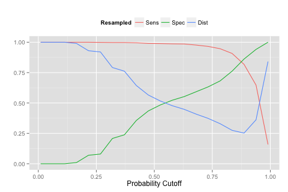

Loading required package: ggplot2Loading required package: latticeset.seed(442)
training <- twoClassSim(n = 1000, intercept = -16)
testing <- twoClassSim(n = 1000, intercept = -16)One of the toughest problems in predictive model occurs when the classes have a severe imbalance. We spend an entire chapter on this subject itself. One consequence of this is that the performance is generally very biased against the class with the smallest frequencies. For example, if the data have a majority of samples belonging to the first class and very few in the second class, most predictive models will maximize accuracy by predicting everything to be the first class. As a result there’s usually great sensitivity but poor specificity.
As a demonstration will use a simulation system described here. By default it has about a 50-50 class frequency but we can change this by altering the function argument called intercept:
Loading required package: ggplot2Loading required package: latticeset.seed(442)
training <- twoClassSim(n = 1000, intercept = -16)
testing <- twoClassSim(n = 1000, intercept = -16)In the training set the class frequency breakdown looks like this:
There is almost a 9:1 imbalance in these data.
Let’s use a standard random forest model with these data using the default value of mtry. We’ll also use 10-fold cross validation to get a sense of performance:
set.seed(949)
mod0 <- train(Class ~ ., data = training,
method = "rf",
metric = "ROC",
tuneGrid = data.frame(mtry = 3),
trControl = trainControl(method = "cv",
classProbs = TRUE,
summaryFunction = twoClassSummary))
getTrainPerf(mod0)
## TrainROC TrainSens TrainSpec method
## 1 0.9288911 0.99 0.4736364 rfThe area under the ROC curve is very high, indicating that the model has very good predictive power for these data. Here’s a test set ROC curve for this model:

The plot shows the default probability cut off value of 50%. The sensitivity and specificity values associated with this point indicate that performance is not that good when an actual call needs to be made on a sample.
One of the most common ways to deal with this is to determine an alternate probability cut off using the ROC curve. But to do this well, another set of data (not the test set) is needed to set the cut off and the test set is used to validate it. We don’t have a lot of data this is difficult since we will be spending some of our data just to get a single cut off value.
Alternatively the model can be tuned, using resampling, to determine any model tuning parameters as well as an appropriate cut off for the probabilities.
The latest update to the caret package allows users to define their own modeling and prediction components. This also gives us a huge amount of flexibility for creating your own models or doing some things that were originally intended by the package. This page shows a lot of the details for creating custom models.
Suppose the model has one tuning parameter and we want to look at four candidate values for tuning. Suppose we also want to tune the probability cut off over 20 different thresholds. Now we have to look at 20×4=80 different models (and that is for each resample). One other feature that has been opened up his ability to use sequential parameters: these are tuning parameters that don’t require a completely new model fit to produce predictions. In this case, we can fit one random forest model and get it’s predicted class probabilities and evaluate the candidate probability cutoffs using these same hold-out samples. Again, there’s a lot of details on this page and, without going into them, our code for these analyses can be found here.
Basically, we define a list of model components (such as the fitting code, the prediction code, etc.) and feed this into the train function instead of using a pre-listed model string (such as method = “rf”). For this model and these data, there was an 8% increase in training time to evaluate 20 additional values of the probability cut off.
How do we optimize this model? Normally we might look at the area under the ROC curve as a metric to choose our final values. In this case the ROC curve is independent of the probability threshold so we have to use something else. A common technique to evaluate a candidate threshold is see how close it is to the perfect model where sensitivity and specificity are one. Our code will use the distance between the current model’s performance and the best possible performance and then have train minimize this distance when choosing it’s parameters. Here is the code that we use to calculate this:
fourStats <- function (data, lev = levels(data$obs), model = NULL) {
## This code will get use the area under the ROC curve and the
## sensitivity and specificity values using the current candidate
## value of the probability threshold.
out <- c(twoClassSummary(data, lev = levels(data$obs), model = NULL))
## The best possible model has sensitivity of 1 and specifity of 1.
## How far are we from that value?
coords <- matrix(c(1, 1, out["Spec"], out["Sens"]),
ncol = 2,
byrow = TRUE)
colnames(coords) <- c("Spec", "Sens")
rownames(coords) <- c("Best", "Current")
c(out, Dist = dist(coords)[1])
}Now let’s run our random forest model and see what it comes up with for the best possible threshold:
set.seed(949)
mod1 <- train(Class ~ ., data = training,
## 'modelInfo' is a list object found in the linked
## source code
method = modelInfo,
## Minimize the distance to the perfect model
metric = "Dist",
maximize = FALSE,
tuneLength = 20,
trControl = trainControl(method = "cv",
classProbs = TRUE,
summaryFunction = fourStats))The resulting model output notes that:
## Tuning parameter 'mtry' was held constant at a value of 3
## Dist was used to select the optimal model using the smallest value.
## The final values used for the model were mtry = 3 and threshold = 0.887.Using ggplot(mod1) will show the performance profile. Instead here is a plot of the sensitivity, specificity, and distance to the perfect model:

You can see that as we increase the probability cut off for the first class it takes more and more evidence for a sample to be predicted as the first class. As a result the sensitivity goes down when the threshold becomes very large. The upside is that we can increase specificity in the same way. The blue curve shows the distance to the perfect model. The value of 0.887 was found to be optimal.
Now we can use the test set ROC curve to validate the cut off we chose by resampling. Here the cut off closest to the perfect model is 0.881. We were able to find a good probability cut off value without setting aside another set of data for tuning the cut off.
One great thing about this code is that it will automatically apply the optimized probability threshold when predicting new samples. Here is an example:
Class1 Class2 Class Note
1 0.874 0.126 Class2 *
2 1.000 0.000 Class1
3 0.930 0.070 Class1
4 0.794 0.206 Class2 *
5 0.836 0.164 Class2 *
6 0.988 0.012 Class1 However we should be careful because the probability values are not consistent with our usual notion of a 50-50 cut off.
(This article was originally posted at http://appliedpredictivemodeling.com)